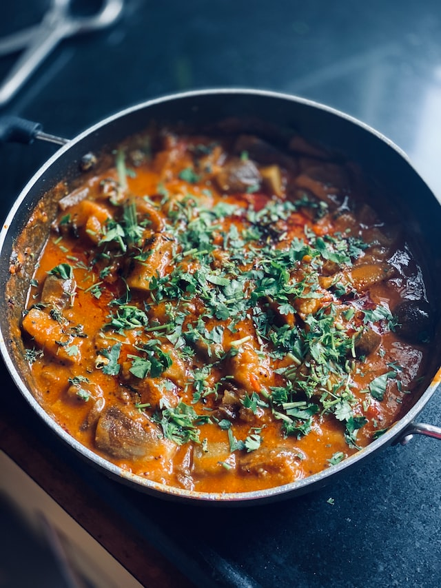

Odin Recipes
Aubergine Curry

Description
This fragrant aubergine curry is an explosion of flavour – cooked with warming spices, then simmered in a rich
tomato sauce for a delicious and comforting meal.
Ingredients
- 2 large aubergines, cut into cubes
- 2 tablespoons olive oil
- 1 large onion, finely chopped
- 2 cloves garlic, minced
- 1 teaspoon ground ginger
- 1 teaspoon ground cumin
- 1 teaspoon ground coriander
- ½ teaspoon ground turmeric
- 1 teaspoon garam masala
- 1 teaspoon chilli powder
- 400g tinned chopped tomatoes
- 200ml vegetable stock
- 2 tablespoons chopped fresh coriander
- Salt and pepper
Steps
- Heat the olive oil in a large saucepan over a medium heat.
- Add the onion and garlic and cook for 5 minutes until softened.
- Add the ground ginger, cumin, coriander, turmeric, garam masala and chilli powder and cook for a further
2 minutes until fragrant.
- Add the aubergines and stir to coat in the spices.
- Add the chopped tomatoes and vegetable stock, bring to the boil, then reduce to a simmer.
- Simmer for 20 minutes until the aubergines are cooked through and the sauce has thickened.
- Stir in the chopped coriander and season with salt and pepper.
- Serve hot. Enjoy!
Return to menu